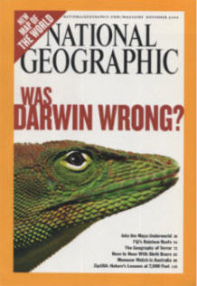

| Feature Article - November 2004 |
| by Do-While Jones |
Despite the fact that modern evolutionists have rejected almost everything Darwin believed, National Geographic makes the claim that Darwin was right.
|
 |
In evolutionary circles, Neo-Darwinism has generally replaced Darwinism because modern science has rejected almost everything Darwin believed. In the Origin of Species, Darwin said that diet, exercise, and climate caused variations that were inherited. Modern scientists know this isn't true. In the Descent of Man, Darwin incorrectly claimed that when "Negroes" (who he also referred to as "barbarians", "savages", and "low and degraded inhabitants") breed with "civilized" people (his term for white people), the offspring (if any) are feeble and sterile because Negroes are a less highly evolved species than civilized people. That certainly isn't the opinion of the majority of evolutionists today. Darwin was not the first to suggest the idea that all life evolved from lower forms. He was, however, the first to suggest a method by which evolution could occur that seemed plausible given the ignorance of 19th century science. Therefore, he became an icon of evolution, and his name is synonymous with the theory of evolution. Apparently, National Geographic feels that it is necessary to defend Darwin to defend evolution, so they devoted a large portion of the November, 2004, issue to do it. In previous newsletters we have discussed what Darwin said about evolution 1 and racism 2, so there is no need to go over that ground again. Instead, we will examine the content of National Geographic's article, despite the fact that it has little to do with what Darwin actually wrote. |
In big letters on pages 2 and 3, National Geographic asks the question, "Was Darwin wrong?" Then, in letters that take up the entire top half of page 4, they answer, "No. the evidence for evolution is overwhelming." So, let's look at what that evidence is.
They began their article by defending against the "evolution is just a theory" argument. For the record, we must point out that Science Against Evolution has never argued that the theory of evolution is wrong because it is "just a theory." We have always argued that the theory of evolution should be rejected because it is a theory that is not consistent with modern scientific knowledge. Furthermore, Darwin never argued that unconfirmed theories should be taken at face value as fact.
The fact that National Geographic began their article with this topic says more about National Geographic than it does about evolution. Notice what they wrote.
|
Evolutionary theory, though, is a bit different. It's such a dangerously wonderful and far-reaching view of life that some people find it unacceptable, despite the vast body of supporting evidence. As applied to our own species, Homo sapiens, it can seem more threatening still. Many fundamentalist Christians and ultra-orthodox Jews take alarm at the thought that human descent from earlier primates contradicts a strict reading of the Book of Genesis. 3 |
We would like you to ask yourself, "What does this tell us about National Geographic?" First, on the conscious level, they apparently believe that the primary objection to the theory of evolution is religiously motivated. We will deal with that in a moment.
The second observation, which we would like to submit for your consideration, is that people tend to think that other people fear the same things they fear. Therefore, we suspect that the article's author, David Quammen, thinks that creationists fear the implications of the theory of evolution because he himself fears the implications of divine creation. He suggests that creationists irrationally reject the theory of evolution because it threatens their beliefs. One could just as easily argue that perhaps Quammen rejects creation because it threatens his religious beliefs. Quammen obviously recognizes that the theory of evolution has moral implications, so he must certainly recognize that if the theory of evolution is not true, there might be a creator who expects worship and punishes disobedience. Quammen may hold fast to the theory of evolution despite the overwhelming evidence against it because he feels threatened by what he thinks the alternative might be.
Let's not dwell too much on this point. All we really want to note is that National Geographic begins their defense of the theory of evolution by saying that (1) you should not reject it because it is "just a theory", and (2) people reject the theory because it threatens their religious beliefs. Both of these arguments are philosophical, not scientific.
Ironically, on the same page, National Geographic refutes their second argument.
|
Only 37 percent of polled Americans were satisfied with allowing room for both God and Darwin--that is, divine initiative to get things started, evolution as the creative means. (This view, according to more than one papal pronouncement, is compatible with Roman Catholic dogma.) Still fewer Americans, only 12 percent, believed that humans evolved from other life-forms without any involvement of a god. ... Gallop interviewers posed exactly the same choices in 1982, 1993, 1997, and 1999. The creationist conviction--that God alone, not evolution, produced humans--has never drawn less than 44 percent. Why are there so many antievolutionists? Scriptural literalism can only be part of the answer. The American public certainly includes a large segment of scriptural literalists--but not that large, not 44 percent. 4 |
National Geographic began their article with the suggestion that the primary objection to the theory of evolution is religious irrationality, and then they presented polling data that refuted their original premise!
National Geographic is right about two things. First, it is true that the number of scriptural literalists is nowhere near 44 percent. We looked at page 442 of the 2001 Time Almanac to get some idea of church membership in 1999. Then we made some subjective, judgmental, and probably unfair assumptions about which denominations are "scriptural literalists" and which are not. Our estimate is that only 5 to 10 percent of Americans can be labeled "scriptural literalists." So, we agree with National Geographic that the number of scriptural literalists is not nearly 44 percent.
If Gallop says that 44 percent of the American population are creationists, and the number of scriptural literalists is 10 percent or less, how does one account for the other 34 (or more) percent? Why do more than one third of all Americans reject evolution for some reason other than a literal belief in Genesis? We just loved National Geographic's answer.
|
Creationist proselytizers and political activists, working hard to interfere with the teaching of evolutionary biology in public schools, are another part. Honest confusion and ignorance, among millions of adult Americans, must be still another. Many people have never taken a biology course that dealt with evolution nor read a book in which the theory was lucidly explained. Sure we've all heard of Charles Darwin, and of a vague, somber notion about struggle and survival that sometimes goes by the catchall label "Darwinism." But the main sources of information from which most Americans have drawn their awareness of this subject, it seems, are haphazard ones at best: cultural osmosis, newspaper and magazine references, half-baked nature documentaries on the tube, and hearsay. 5 |
According to National Geographic, Americans have rejected evolution because everything they know about evolution comes from "haphazard" National Geographic magazine articles and "half-baked" National Geographic television shows! Hummmm! What could they do to fix that problem?
Seriously, the problem for evolutionists is not lack of knowledge about biology. Their problem is too much accurate knowledge about biology. Their political activists have not been successful in interfering with the teaching of biology in the public schools, so the students recognize nonsense when they see it in magazines and on TV.
According to National Geographic,
|
The evidence, as he [Darwin] presented it, mostly fell within four categories: biogeography, paleontology, embryology, and morphology. Biogeography is the study of the geographical distribution of living creatures--that is, which species inhabit which parts of the planet and why. Paleontology investigates extinct life-forms, as revealed in the fossil record. Embryology examines the revealing stages of development (echoing earlier stages of evolutionary history) that embryos pass through before birth or hatching; at a stretch, embryology also concerns the immature forms of animals that metamorphose, such as the larvae of insects. Morphology is the science of anatomical shape and design. Darwin devoted sizable sections of The Origin of Species to these categories. 6 |
Let's take those four categories in reverse order.
Morphology is based on the idea that creatures look the same because they evolved from a common ancestor. Creatures look different because they evolved (changed). So, all similarities and all differences are evidence of evolution, at least in National Geographic's eyes. It is hard not to see evolution if that is your vision. It is equally as valid to suppose that all similarities are the result of a common design, and all differences are intentional modifications to a fundamental design for specific purposes.
|
Embryology too involved patterns that couldn't be explained by coincidence. Why does the embryo of a mammal pass through stages resembling that of a reptile? Why is one of the larval forms of a barnacle, before metamorphosis, so similar to the larval form of a shrimp? Why do the larvae of moths, flies, and beetles resemble their respective adults? Because, Darwin wrote, "the embryo is the animal in its less modified state" and that state "reveals the structure of its progenitor." 7 |
Informed evolutionists probably cringed when they read that. It amazed us that National Geographic would try to defend an idea that evolutionists wisely rejected long ago.
Darwin believed that embryonic stages of development echo earlier stages of evolutionary history because he had seen Hackel's faked drawings of embryonic development. Evolutionists have admitted that the drawings were fakes, and that mammal embryos do not pass through a fish stage, then an amphibian stage, then a reptilian stage, before becoming mammals. Darwin was just plain wrong about that.
| Please follow the link to see clarifications and corrections to the statements above. |
|---|
Paleontology was a real problem for Darwin. He began chapter 6 of the Origin of Species by saying,
|
LONG before having arrived at this part of my work, a crowd of difficulties will have occurred to the reader. Some of them are so grave that to this day I can never reflect on them without being staggered; but, to the best of my judgment, the greater number are only apparent, and those that are real are not, I think, fatal to my theory. These difficulties and objections may be classed under the following heads:-Firstly, why, if species have descended from other species by insensibly fine gradations, do we not everywhere see innumerable transitional forms? Why is not all nature in confusion instead of the species being, as we see them, well defined? 8 |
His answer was,
|
But, as by this theory innumerable transitional forms must have existed, why do we not find them embedded in countless numbers in the crust of the earth? It will be much more convenient to discuss this question in the chapter on the Imperfection of the geological record; and I will here only state that I believe the answer mainly lies in the record being incomparably less perfect than is generally supposed; 9 |
Darwin did not see evidence of evolution in paleontology. On the contrary, he saw evidence of evolution despite what he knew about paleontology. He believed the fossil record would some day support his theory, but he was wrong.
We saved biogeography for last because it is the one we want to discuss at length. It was, indeed, Darwin's observation about the similarity of birds on the Galapagos islands that was pivotal to his development of the theory.
I once had an experience similar to Darwin's. About 20 years ago I had to travel to Ft. Lauderdale, Florida, to conduct some business with a now-defunct computer company. While there I met many former New Yorkers. I knew they were New Yorkers because they, without any prompting on my part, told me how much better things were when they were back in New York. Their stories must have been true because native Floridians told me how much better things were when the New Yorkers were back in New York.
If Darwin had gone to Ft. Lauderdale, he might have concluded that Floridians evolved into New Yorkers. I think that New Yorkers migrated to Florida for any one of a number of reasons. They may have been attracted by the climate, tax structure, or golf courses. Who knows?
Animals are no different from people in this respect. Here in the Mojave Desert we have lots of coyotes, ravens, tortoises, roadrunners, and sidewinders. Are they here because they evolved here? Or are they here because they find it easier to live in the desert than in Alaska? Our desert plants are different from the plants one finds in Alaska or the Galapagos Islands. Geographic segregation of biological species doesn't prove evolution.
Furthermore, Darwin didn't see "evolution" in the Galapagos Islands. He simply saw variation. Variation isn't evolution.
But we have digressed. The issue isn't whether or not Darwin was wrong. The issue is whether or not National Geographic's haphazard article about evolution was wrong.
|
Anyone who considers the biogeographical data, Darwin wrote, must be struck by the mysterious clustering pattern among what he called "closely allied" species--that is, similar creatures sharing roughly the same body plan. Such closely allied species tend to be found on the same continent (several species of zebras in Africa) or within the same group of oceanic islands (dozens of species of honeycreepers in Hawaii, thirteen species of Galapagos finch), despite their species-by-species preferences for different habitats, food sources, or conditions of climate. 10 |
There is nothing "mysterious" about this clustering, any more than the clustering of New Yorkers in Florida. But National Geographic goes on to say
|
Paleontology reveals a similar clustering pattern in the dimension of time. The vertical column of geologic strata, laid down by sedimentary processes over the eons, lightly peppered with fossils, represents a tangible record showing which species lived when. ... What Darwin noticed about this record is that closely allied species tend to be found adjacent to one another in successive strata. 11 |
No, paleontology reveals a similar clustering pattern in the dimension of space, not time. We find similar species clustered together because they were in the same place when they were buried. If Mount St. Helens erupts, it will bury living things in lava, ash, or mud flows. The things that would be buried in the resulting rocks would be different than the living things that would be buried if the cinder cone at Fossil Falls, just a few miles north of here, erupted at the same time. Different things live today near Mount St. Helens than live today near Fossil Falls. The fossil record preserves geographical, not temporal, information.
|
Living creatures can be easily sorted into a hierarch of categories--not just species but genera, families, orders, whole kingdoms--based on which anatomical characters they share and which they don't. ... Such a pattern of tiered resemblances--groups of similar species nested within broader groupings, and all descending from a single source--isn't naturally present among other collections of items. You won't find anything equivalent if you try to categorize rocks, or musical instruments, or jewelry. Why not? Because rock types and styles of jewelry don't reflect unbroken descent from common ancestors. Biological diversity does. 12 |
We've heard an awful lot of dumb things from evolutionists, usually in obscenity-laced email, but this has got to be the dumbest.
Geologists do categorize rocks. They are sedimentary, metamorphic, and igneous. Sedimentary rocks can be categorized as limestone, siltstone, sandstone, conglomerate, etc. Musical instruments are easily categorized. Did Quammen sleep through music class and miss the whole discussion of brass, woodwinds, strings, percussion? Doesn't he know that string instruments can be divided into violins, violas, guitars, banjos, etc? Would he not be able to tell a piece of Native American jewelry from the crown jewels of Europe?
The whole Navy stock number system is based on the fact that one can classify every manufactured item in a manner that seems logical to someone. Classification does not "reflect unbroken descent from common ancestors." In fact, it would not be possible to classify unbroken descent because you would not know where the fish leave off and the amphibians begin. It would be hard to tell a reptile from a mammal, if not for the fact that there is a clean break in the categories.
In geology, there is an arbitrary distinction between sand, pebbles, cobbles, and boulders because there is continual variation in size. If evolution were true, then there would be, as Darwin correctly pointed out, innumerable living transitional forms, making it difficult to classify them without establishing arbitrary criteria.
National Geographic goes on to say,
|
Vestigial characteristics are still another form of morphological evidence, illuminating to contemplate because they show that the living world is full of small, intolerable imperfections. ... Vestigial structures stand as remnants of the evolutionary history of a lineage. 13 |
Here National Geographic has confused evolution with devolution. The fact that my 20-year-old truck has a heater that no longer works proves that things can break. Living in the desert, as I do, it doesn't really matter much that the heater doesn't work. It isn't worth the expense to fix it. But the process that caused the heater to break in my old truck is not the process that put the air conditioner in my new one.
Yes, there are blind fish who survive perfectly well in dark caves, despite the fact that their eyes failed to develop properly. They probably have devolved from sighted fish. Natural selection did not eliminate them because eyes are not advantageous in total darkness.
The real question is where did the eyes come from in the first place? Fish with blind eyes in totally dark caves are not evidence of eyes in the process of evolving. The non-functional eyes don't give the blind cave fish any survival advantage over other fish in the cave, so natural selection won't encourage them to evolve.
Darwin was clearly wrong that diet, exercise, and climate produce inheritable variations. (These are facts that National Geographic conveniently overlooks.) Darwin was wrong that biogeography is evidence of evolution. He was right that there isn't evidence of evolution in the fossil record, but National Geographic says that he was right to recognize evolution in the geologic column. Darwin was misled by fraudulent drawings about embryology. If Darwin actually believed that the ability to classify biological organisms is evidence of evolution (and we aren't convinced that Darwin actually believed that), he was wrong about that, too.
The only thing that Darwin may have gotten right is the idea of natural selection. Survival of the fittest certainly does have some influence over which genes get passed along to the next generation (but some evolutionists argue that luck is equally important). Ironically, the only thing that Darwin may have gotten right wasn't even his own idea. In very large letters, National Geographic proclaims,
|
Darwin took a crucial idea from the population theorist Thomas Malthus: More individuals are born than can survive and reproduce, given the limitations of food and space. Malthus wrote about human society, but Darwin applied this to all species. 14 |
Darwin knew nothing about DNA, of course, but National Geographic tries to use it to prove Darwin was right.
|
The resemblance between our 30,000 human genes and those 30,000 mousy counterparts, Futuyma explained, represents another form of homology, like the resemblance between a five-fingered hand and a five-toed paw. Such genetic homology is what gives meaning to biomedical research using mice and other animals, which (to their sad misfortune) are our closest living relatives. 15 |
Of course there is some genetic similarity between all living creatures. Biomedical research on similar creatures can provide insight into disease cause, prevention, and treatment. But this has absolutely nothing to do with evolution. Evolutionists typically try to scare the public into believing that if one rejects the theory of evolution, then all medical research will come to a screeching halt. The truth is that if researchers would quit wasting time trying to construct family trees based on genetic similarity (and waste much more time trying to defend them when they disagree with family trees based on morphology or paleontology) and would spend that time on real medical research, medical science would advance more rapidly.
Unwittingly, National Geographic demonstrates the foolishness of trying to construct evolutionary history using whale evolution as an example. We've written about this in past newsletters 16 in great detail. In the recent National Geographic article, Quammen tries to make defeat look like victory.
|
Since the late 1970's Gingerich has collected fossil specimens of early whales from remote digs in Egypt and Pakistan. Working with Pakistani colleagues, he discovered Pakicetus, a terrestrial mammal dating from 50 million years ago, whose ear bone reflect its membership in the whale lineage but whose skull looks doglike. ... Gingerich told me, he leaned toward believing that all whales had descended from a group of carnivorous Eocene mammals known as mesonychids, with cheek teeth useful for chewing meat and bone. Just a bit more evidence, he thought, would confirm that relationship. By the end of the 1990s most paleontologists agreed. Meanwhile, molecular biologists had explored the same question and arrived at a different answer. No, the match to those Eocene carnivores might be close, but not close enough. DNA hybridization and other tests suggested that whales had descended from artiodactyls (that is, even-toed herbivores, such as antelopes and hippos), not from meat-eating mesonychids. 17 |
So, here we have a classic example of the disagreement between fossils and DNA. Let's see how the disagreement was resolved.
|
In the year 2000 Gingerich chose a new field site in Pakistan, where one of his students found a single piece of fossil that changed the prevailing view in paleontology. It was half of a pulley-shaped anklebone, known as an astragalus, belonging to another new species of whale. A Pakistani colleague found the fragment's other half. When Gingerich fitted the two pieces together, he had a moment of humbling recognition: The molecular biologists were right. Here was an anklebone, from a four-legged whale dating back 47 million years, that closely resembled the homologous anklebone in an artiodactyl. Suddenly he realized how closely whales are related to antelopes. This is how science is supposed to work. Ideas come and go, but the fittest survive. Downstairs in his office Phil Gingerich opened a specimen drawer, showing me some of the actual fossils from which the display skeletons upstairs were modeled. He put a small lump of petrified bone, no larger than a lug nut, into my hand. It was the famous astragalus, from the species he had eventually named Artiocetus clavis. It felt solid and heavy as truth. 18 |
Could you ask for any more compelling evidence? Well, yes, we could.
Just remember when you see a museum exhibit about Pakicetus (which means, "whale from Pakistan), that its discoverer now believes it had nothing to do with whale evolution. Furthermore, he was convinced by a broken ankle that looks like an antelope anklebone, which he (for reasons we can't possibly explain) believes comes from a whale (for which no other bones have ever been found).
This month National Geographic has given us another example of a "haphazard" article that causes the general public to doubt evolution. For that, we are extremely grateful.
The problem is that too many people will not really read the article. They will look at the title and the pictures, and assume that the article contains technical proof of evolution, and will not read it, assuming that it proves evolution.
Please, don't take our word for it. Read the whole National Geographic article and think about it. Come to your own conclusion. We are sure you will agree that science is against evolution.
| Quick links to | |
|---|---|
| Science Against Evolution Home Page |
Back issues of Disclosure (our newsletter) |
| Web Site of the Month |
Topical Index |
Footnotes:
1
Disclosure, January 2002, Darwin's Scorecard
2
Disclosure, October 2003, Evolution Tries To Catch Up
3
David Quammen, National Geographic, November 2004, "Was Darwin Wrong?" page 6 https://www.nationalgeographic.com/magazine/article/was-darwin-wrong
(Ev+)
4
ibid. page 6
5
ibid. pages 6 - 8
6
ibid. page 9
7
ibid. page 13
8
Darwin, Origin of Species, chapter 6 http://darwin-online.org.uk/content/frameset?itemID=F373&viewtype;=text&pageseq;=1
(Ev)
9
ibid.
10
David Quammen, National Geographic, November 2004, "Was Darwin Wrong?" page 12 https://www.nationalgeographic.com/magazine/article/was-darwin-wrong
(Ev+)
11
ibid. page 12
12
ibid. page 13
13
ibid. page 20
14
ibid. page 19
15
ibid. pages 20 - 21
16
Disclosure, August 1999, In a Whale of Trouble,
and Disclosure, November 2001, Whale Tale Two.
17
David Quammen, National Geographic, November 2004, "Was Darwin Wrong?" page 31 https://www.nationalgeographic.com/magazine/article/was-darwin-wrong
(Ev+)
18
ibid. page 31